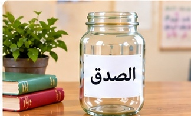
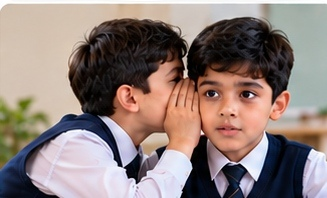
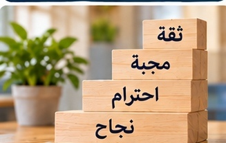
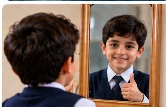
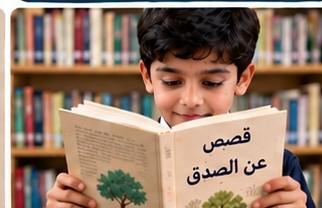
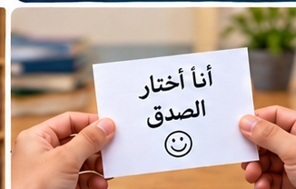

⛶
الصدق خُلُق عظيم
الصدق يعني أن أقول الحقيقة وأتصرف بأمانة حتى عندما لا يراقبني أحد.
متى يكون قول الحقيقة شجاعًا؟
الصدق أساس الثقة

عندما أكون صادقًا يثق بي الآخرون ويشعرون بالأمان في التعامل معي.
كيف يبني الصدق الثقة بين الناس؟
الصدق يكسب احترام الآخرين
الصادق يحترمه الناس لأن كلماته وأفعاله واضحة ولا تخدع أحدًا.
لماذا نحترم الشخص الصادق؟
الصدق في الأمانة
إذا وجدت شيئًا ليس لي، أعيده إلى صاحبه أو أسلمه لشخص مسؤول.
ماذا تفعل إذا وجدت شيئًا ضائعًا في المدرسة؟
الصدق في الامتحانات
أجيب بما أعرفه ولا أغش، لأن النجاح الحقيقي يأتي من جهدي أنا.
لماذا يُعد الغش عكس الصدق؟
الصدق في الكلام

أقول ما حدث كما هو، ولا أغيّر الحقيقة حتى أتجنب اللوم أو العقوبة.
ماذا يحدث عندما نضيف كلامًا غير صحيح إلى القصة؟
الصدق في تحمّل المسؤولية
إذا أخطأت أتحمل نتيجة فعلي وأحاول إصلاح ما أفسدته.
كيف يظهر الصدق عندما نرتكب خطأ؟
الصدق في الاعتراف بالخطأ
الاعتراف بالخطأ لا يقلل مني، بل يدل على شجاعتي ورغبتي في التصحيح.
ماذا تقول عندما تكتشف أنك أخطأت؟
الصدق طريق لمستقبل مشرق
الصدق والاحترام والاجتهاد قيم تساعدني على بناء مستقبل أفضل.
كيف يساعدك الصدق في مستقبلك؟
الصدق في التعامل مع الآخرين
أتحدث بصدق وأفي بما أعد به، وأحترم حقوق زملائي ومشاعرهم.
كيف يكون الصدق جزءًا من التعامل الجيد مع الزملاء؟
ثمار الصدق في حياتك

الصدق ينمّي الثقة والمحبة والاحترام ويجعل علاقاتنا أقوى.
ما أجمل ثمرة للصدق في رأيك؟
كن صادقًا مع نفسك

أعترف بما أستطيع وما أحتاج إلى تحسينه، وأعمل على تطوير نفسي.
كيف نكون صادقين مع أنفسنا؟
الصدق يثبت في القلوب

كلما اعتدنا الصدق أصبح سلوكًا ثابتًا نمارسه في البيت والمدرسة.
كيف نحول الصدق إلى عادة يومية؟
قراري اليوم يصنع غدي

كل موقف أختار فيه الصدق يقوّي شخصيتي ويجعلني أكثر مسؤولية.
ما موقف تستطيع فيه أن تختار الصدق اليوم؟
بصدقنا نبني عراقًا أفضل
حين يكون أبناؤه صادقين وأمناء ومتعاونين يصبح الوطن أقوى وأفضل.
كيف يخدم الصدق مدرستنا ووطننا؟
السابق
التالي